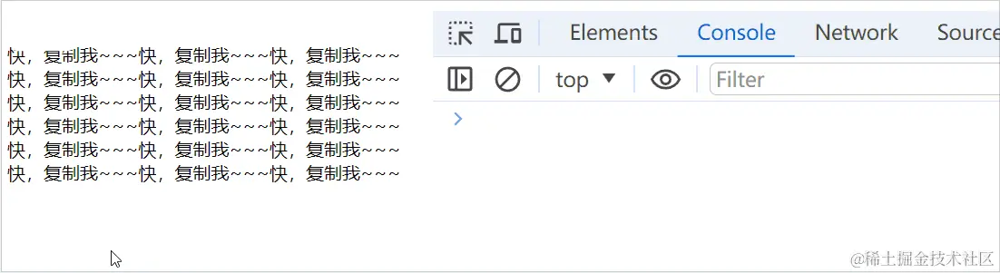
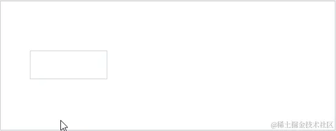
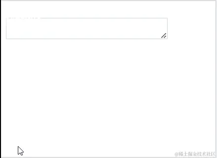
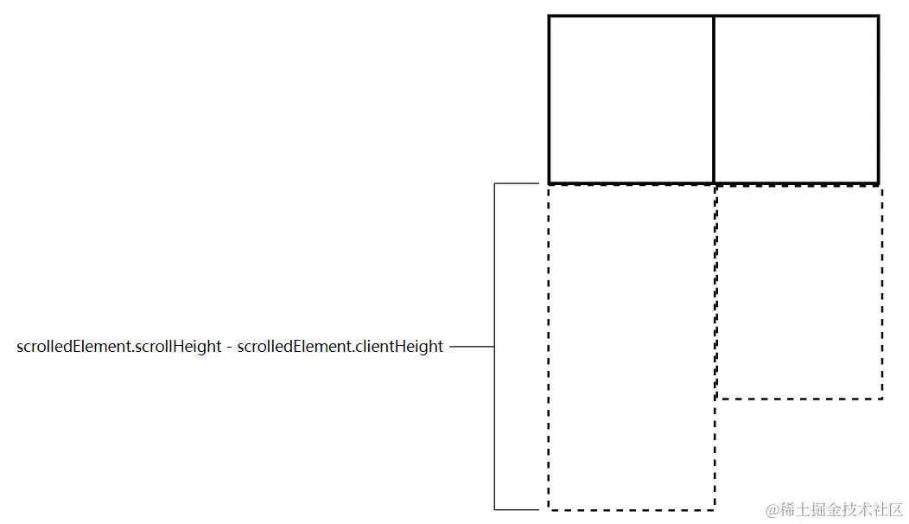
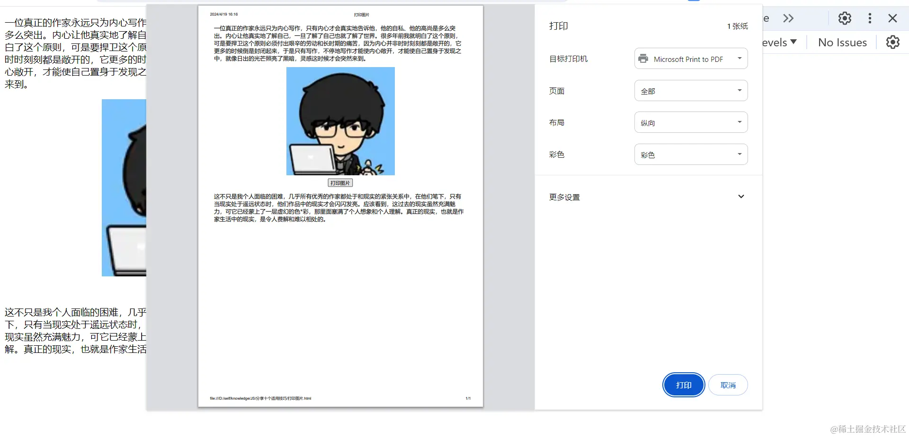
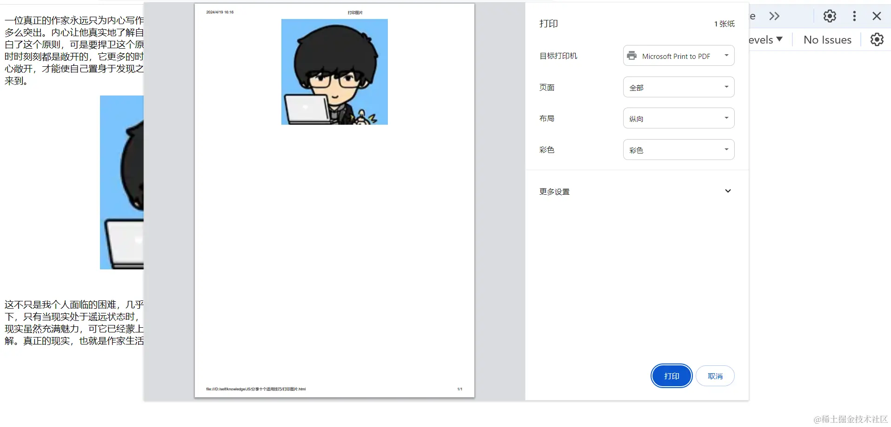
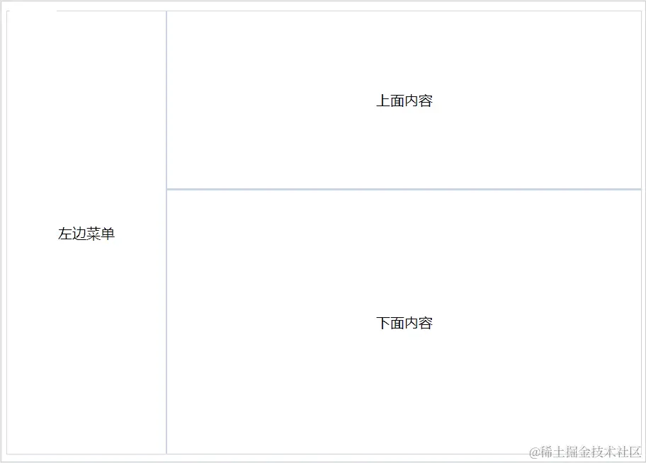

在复制的文本添加自定义内容
<!DOCTYPE html>
<html>
<head>
<title>在复制的文本添加自定义内容</title>
</head>
<body>
<div id="content">随便整点内容就行........</div>
<script>
document.addEventListener("DOMContentLoaded", () => {
const contentElement = document.getElementById("content");
// 监听 copy 事件
contentElement.addEventListener("copy", (e) => {
// 获取复制的内容
const originalText = window.getSelection().toString();
// 没有选中文本
if (!originalText) return;
// 阻止copy事件的默认行为，防止没加上自定义信息，就将原始文本复制到剪贴板上
e.preventDefault();
const clipboardData = e.clipboardData;
// 将内容塞进剪贴板中
clipboardData.setData(
"text/plain",
`${originalText}\n\n你小子？又来复制什么？？？\n作者：橙某人\n链接：https://juejin.cn/user/1908407919184670/posts`
);
});
});
</script>
</body>
</html>
input 随着输入内容自动增长宽度
<!DOCTYPE html>
<html>
<head>
<title>input随着输入内容自动增长-宽度</title>
</head>
<body>
<input
id="input"
type="text"
style="border: 1px solid #cbd5e0; min-width: 80px; padding: 10px;"
/>
<script>
document.addEventListener("DOMContentLoaded", () => {
// 创建一个div元素
const fakeElement = document.createElement("div");
// 给它设置样式，用户不可见的
fakeElement.style.position = "absolute";
fakeElement.style.top = "0";
fakeElement.style.left = "-9999px";
fakeElement.style.overflow = "hidden";
fakeElement.style.visibility = "hidden";
fakeElement.style.whiteSpace = "nowrap";
fakeElement.style.height = "0";
// 获取input元素
const inputElement = document.getElementById("input");
// 获取input元素的样式
const styles = window.getComputedStyle(inputElement);
// 将input的样式同步到div中
// 字体相关的
fakeElement.style.fontFamily = styles.fontFamily;
fakeElement.style.fontSize = styles.fontSize;
fakeElement.style.fontStyle = styles.fontStyle;
fakeElement.style.fontWeight = styles.fontWeight;
fakeElement.style.letterSpacing = styles.letterSpacing;
fakeElement.style.textTransform = styles.textTransform;
// 边框与内边距
fakeElement.style.borderLeftWidth = styles.borderLeftWidth;
fakeElement.style.borderRightWidth = styles.borderRightWidth;
fakeElement.style.paddingLeft = styles.paddingLeft;
fakeElement.style.paddingRight = styles.paddingRight;
document.body.appendChild(fakeElement);
// 先执行一次，保持div与input相同的初始宽度
setWidth();
// 监听input的输入
inputElement.addEventListener("input", (e) => {
setWidth(
inputElement.value || inputElement.getAttribute("placeholder")
);
});
// 计算div宽度并同步给input上
function setWidth(text = "") {
fakeElement.innerHTML = text.replace(/\s/g, "&" + "nbsp;");
const fakeElementStyles = window.getComputedStyle(fakeElement);
inputElement.style.width = fakeElementStyles.width;
}
});
</script>
</body>
</html>
整个过程原理大致是，将 input 实时输入的内容同步给一个容器，计算容器的宽度，再将容器宽度同步回 input 就能完成如上的效果啦。😁
这个小功能关键点是检测内容的宽度，而在 JS 中检测内容宽度一般用两种方式，其一，使用假元素，也就是我们上面使用的形式；另一种就是使用 canvas 的 measureText 方法。
大致过程如下：
function measureWidth(text, font) {
const canvas = document.createElement("canvas");
const context = canvas.getContext("2d");
context.font = font;
const metrics = context.measureText(text);
return metrics.width;
}
textarea 随着输入内容自动增长高度
<!DOCTYPE html>
<html>
<head>
<title>textarea随着输入内容自动增长-高度</title>
</head>
<body>
<textarea
id="textarea"
style="width: 16rem;border: 1px solid rgb(203 213 225);"
></textarea>
<script>
document.addEventListener("DOMContentLoaded", () => {
const textareaEle = document.getElementById("textarea");
textareaEle.addEventListener("input", () => {
textareaEle.style.height = "auto";
textareaEle.style.height = `${textareaEle.scrollHeight}px`;
});
});
</script>
</body>
</html>
呃......两行代码就能完成 😲，完全没难度，一个小技巧。
先将文本域的高度重置成 auto，这样我们就能使用 scrollHeight 获取内容的实际高度，然后，将文本域的高度设置成 scrollHeight 的值，这就能让文本域自动扩展适配内容了。
同步两个元素之间的滚动
这个案例源于小编提交 Git 代码时，查看相关代码的前后情况，那时编辑器的同步滚动引起了我的注意，就想着写个 DEMO 玩玩看。😗
同步滚动的应用情况还是非常常见的，如小编此时正在用的掘金 Markdown 编辑器、处理并排翻译项目时等等吧，总之，同步滚动可以给我们提供更便捷的工作效率。
下面咱们来一步一步实现这个小功能案例，先整上布局：
<!DOCTYPE html>
<html>
<head>
<title>同步两个元素之间的滚动</title>
<style>
#container {
display: flex;
border: 1px solid rgb(203, 213, 225);
height: 520px;
}
#left,
#right {
flex: 1;
overflow-y: auto;
}
.child {
display: flex;
justify-content: center;
align-items: center;
height: 50px;
}
.child:not(:last-child) {
border-bottom: 1px solid rgb(203, 213, 225);
}
</style>
</head>
<body>
<div id="container">
<div id="left"></div>
<div id="right"></div>
</div>
<script>
const container = document.getElementById("container");
const left = document.getElementById("left");
const right = document.getElementById("right");
createChildElement(left);
createChildElement(right);
// 在给定范围内随机生成一个数字
function randomInteger(min, max) {
return Math.floor(Math.random() * (max - min + 1)) + min;
}
// 生成子元素
function createChildElement(parent) {
// 要生成多少个子元素
const childNum = randomInteger(50, 80);
console.log("子元素有多少个：", childNum);
// 批量创建子元素
Array(childNum)
.fill(0)
.forEach((_, index) => {
const div = document.createElement("div");
div.classList.add("child");
div.innerHTML = `${index + 1}`;
parent.appendChild(div);
});
}
</script>
</body>
</html>
Em...😐 没啥难，就是通过 JS 动态随机生成了一些子元素，方便我们后续的测试，大概整出来的效果如下：
现在左右两边各自滚自己的，互不干扰。
而我们要如何来同步两边的滚动呢？很简单！咱们只要给两边加上监听器（scroll），当用户滚动其中一边，咱们更新另一边就可以。
具体实现过程：
left.addEventListener("scroll", (e) => {
syncScroll(left, right);
});
right.addEventListener("scroll", (e) => {
syncScroll(right, left);
});
// 同步滚动, scrolledElement为滚动的元素, element为需要同步滚动的元素
function syncScroll(scrolledElement, element) {
const top = scrolledElement.scrollTop;
const left = scrolledElement.scrollLeft;
element.scrollTo({
behavior: "instant",
top,
left,
});
}
我们用了 Element.scrollTo API 来进行滚动操作，看起来是不是还不错？😉
不过，这还没完，这里还存在两个问题 🔉：
- 可能造成无限滚动循环：因为我们左右两边都监听了
scroll事件，如果用户滚动了左边，我们去通过Element.scrollToAPI 滚动右边，这里其实右边也会触发scroll事件，那么它又会去同步滚动左边，这就会造成一个死循环的无限滚动了。而为什么动态图中看起来很正常呢？这是因为咱们在behavior参数上使用了instant值，如果你换成smooth值，这个问题就比较容易复现出来。
- 总高度滚动不同步：仔细瞧动图，你会发现左边还没滚动到底的时候，右边就已经到底了，这可不符合我们同步滚动的需求呀 ❗ 造成这个原因是两边的总高度不一致，虽然现在子元素高度都是一样的，但是子元素个数是随机的，未来也可能是子元素高度不一样高，反正就是两边的总高度可能会不一样高，那么滚动就不可能完全同步。
对于这两个问题，咱们来逐一击破 💣。
要解决无限滚动循环问题，我们可以先暂时将未滚动元素的事件监听器给先移除了，等滚动结束后再加回来，Em...说着...很简单 😑，但...具体要如何做呢？
且看：
const boxs = [left, right];
boxs.forEach((item) => {
item.addEventListener("scroll", handleScroll);
});
function handleScroll(e) {
const scrolledElement = e.target;
boxs
.filter((item) => item !== scrolledElement)
.forEach((noScrolledElement) => {
// 移除未滚动元素的事件监听器
noScrolledElement.removeEventListener("scroll", handleScroll);
// 执行同步滚动
syncScroll(scrolledElement, noScrolledElement);
// 在下次重绘之前加回监听事件
window.requestAnimationFrame(() => {
noScrolledElement.addEventListener("scroll", handleScroll);
});
});
}
function syncScroll(scrolledElement, element) {
// ...
}
这里用到了一个 requestAnimationFrame API 来判断再次添加回事件监听器的时机，按它的 API 介绍"要求浏览器在下次重绘之前调用"，也就是它会在下一次重绘之前被调用。
而滚动操作咱们使用了 Element.scrollTo API，它通常情况下，仅会引起重绘，因为滚动并不改变元素的布局。但是，如果滚动导致某些依赖于滚动位置的计算（如计算动态加载的内容或响应滚动事件而改变样式的元素）发生，那么它也可能间接引起回流，这时可能就要考虑加一个"宏任务"（setTimeout）来判断时机了。
那么，无限滚动循环问题咱们就如此解决掉了 😎，其实关键点是滚动结束时机的把控，这会涉及重绘、回流、事件循环等 JS 的知识点。
而另一个总高度滚动不同步问题呢 ❓ 改动不大，先直接贴上代码：
function syncScroll(scrolledElement, element) {
// 计算 滚动距离 占 总可滚动距离 的滚动比例
const scrolledPercent =
scrolledElement.scrollTop /
(scrolledElement.scrollHeight - scrolledElement.clientHeight);
// 通过 滚动比例 与 总可滚动距离 就能推出实际滚动距离
const top = scrolledPercent * (element.scrollHeight - element.clientHeight);
// top能懂，left就能明白
const scrolledWidthPercent =
scrolledElement.scrollLeft /
(scrolledElement.scrollWidth - scrolledElement.clientWidth);
const left =
scrolledWidthPercent * (element.scrollWidth - element.clientWidth);
element.scrollTo({
behavior: "instant",
top,
left,
});
}
开始咱们是直接将滚动距离 scrolledElement.scrollTop 同步到另一个未滚动元素上。
但是当元素具有不同的高度时，滚动位置可能会变得不同步。要解决这个问题，咱们只能计算出滚动比例再去推导出不同元素的实际需要滚动的距离。
好了，通过这些修改，我们的同步滚动功能现在可以处理具有不同数量块的多个可滚动元素，同时保持其滚动位置完美同步，完美收工。🥳
打印图片
图片打印听起来好像挺高大上 😲，其实不然。
在浏览器中，提供了打印的方法 window.print()，这个方法不需要任何参数，直接调用即可。
不过，它是将整个网页进行打印，这倒是与我们只想打印图片的需求有点差异，不过问题不大，咱们可以利用一个 iframe 来解决，iframe 里面就放一张图片就行嘛，这也是当前浏览器上打印局部内容的主流方案。
就不卖关子了 😄，直接上代码：
<!DOCTYPE html>
<html>
<head>
<title>打印图片</title>
</head>
<body>
<div
style="display: flex; flex-direction: column; justify-content: center;align-items: center;"
>
<img
id="image"
style="width: 300px;margin-bottom: 10px;"
src="https://p9-passport.byteacctimg.com/img/user-avatar/958fa7d9d487975fe84bc62298b8bc47~120x120.awebp"
/>
<button id="print">打印图片</button>
</div>
<script>
document.addEventListener("DOMContentLoaded", () => {
const printBtn = document.getElementById("print");
printBtn.addEventListener("click", function () {
const image = document.getElementById("image");
print(image);
});
function print(image) {
// 创建一个iframe
const iframe = document.createElement("iframe");
// 设置样式
iframe.style.height = 0;
iframe.style.visibility = "hidden";
iframe.style.width = 0;
// 等同于src属性，只是src是路径，srcdoc是HTML代码
iframe.setAttribute("srcdoc", "<html><body></body></html>");
// 插入iframe
document.body.appendChild(iframe);
// iframe加载完
iframe.addEventListener("load", () => {
// 克隆图片元素，防止相互干扰
const imageClone = image.cloneNode();
imageClone.style.maxWidth = "100%";
// 访问iframe的body
const body = iframe.contentDocument.body;
body.style.textAlign = "center";
body.appendChild(imageClone);
// 等待图片加载完
imageClone.addEventListener("load", () => {
// 打印，等同window.print()
iframe.contentWindow.print();
});
});
// iframe.contentWindow返回iframe的window对象
iframe.contentWindow.addEventListener("afterprint", () => {
// 在关联的文档开始打印或关闭打印预览后，将触发 afterprint 事件。
iframe.parentNode.removeChild(iframe);
});
}
});
</script>
</body>
</html>
就一个方法，标有详细的注解，这里就不多说啦，看就完事。👻
贴两张图瞅瞅叭。
整个网页打印：
只打印图片：
可调整大小的视图
看这个案例的具体实现之前，小编建议你先稍微瞅瞅另一篇文章 拖动 ❓ 元素拖动、列表拖动、表格拖动(列与行)🍊🍊🍊 ，看完之后，这个案例对你来说就是手到擒来的事情，没吹 🙅，真是这样。
结构与样式：
<!DOCTYPE html>
<html>
<head>
<title>可调整大小的视图</title>
<style>
.container {
width: 100%;
height: 500px;
border: 1px solid #cbd5e0;
display: flex;
}
.line[data-direction="horizontal"] {
width: 2px;
height: 100%;
background-color: #cbd5e0;
cursor: ew-resize;
}
.line[data-direction="vertical"] {
height: 2px;
width: 100%;
background-color: #cbd5e0;
cursor: ns-resize;
}
.left {
width: 25%;
align-items: center;
display: flex;
justify-content: center;
}
.right {
flex: 1;
align-items: center;
display: flex;
flex-direction: column;
justify-content: center;
}
.top {
width: 100%;
height: 200px;
align-items: center;
display: flex;
justify-content: center;
}
.bottom {
width: 100%;
flex: 1;
align-items: center;
display: flex;
justify-content: center;
}
</style>
</head>
<body>
<div class="container">
<div class="left">左边菜单</div>
<div class="line" data-direction="horizontal"></div>
<div class="right">
<div class="top">上面内容</div>
<div class="line" data-direction="vertical"></div>
<div class="bottom">下面内容</div>
</div>
</div>
</body>
</html>
HTML+CSS 就没什么好说的了，主要咱们是来看看逻辑方面是如何做的。😀
document.addEventListener("DOMContentLoaded", () => {
// 给 拖动元素(line) 批量添加监听事件
document.querySelectorAll(".line").forEach((line) => {
resizable(line);
});
function resizable(line) {
// 容器信息
const containerRect = line.parentNode.getBoundingClientRect();
// 获取拖动方向
const direction = line.getAttribute("data-direction") || "horizontal";
// 获取相邻元素
const prevSibling = line.previousElementSibling;
const nextSibling = line.nextElementSibling;
// 相关位置信息
let x = 0;
let y = 0;
let prevSiblingHeight = 0;
let prevSiblingWidth = 0;
// 拖动元素添加鼠标按下事件
line.addEventListener("mousedown", mouseDownHandler);
function mouseDownHandler(e) {
// 获取鼠标当前位置
x = e.clientX;
y = e.clientY;
// 获取拖动元素的上个元素的宽高
const rect = prevSibling.getBoundingClientRect();
prevSiblingHeight = rect.height;
prevSiblingWidth = rect.width;
// 监听鼠标的移动与释放事件
document.addEventListener("mousemove", mouseMoveHandler);
document.addEventListener("mouseup", mouseUpHandler);
}
function mouseMoveHandler(e) {
// 获取拖动距离
const dx = e.clientX - x;
const dy = e.clientY - y;
switch (direction) {
case "vertical":
// 垂直拖动时，top元素宽度 = (原高度 + 拖动距离) * 100 / 容器总高度
const h = ((prevSiblingHeight + dy) * 100) / containerRect.height;
prevSibling.style.height = h + "%";
break;
case "horizontal":
default:
// 水平拖动时，left元素宽度 = (原宽度 + 拖动距离) * 100 / 容器总宽度
const w = ((prevSiblingWidth + dx) * 100) / containerRect.width;
prevSibling.style.width = w + "%";
break;
}
// 更改相关样式
const cursor = direction === "horizontal" ? "col-resize" : "row-resize";
line.style.cursor = cursor;
document.body.style.cursor = cursor;
prevSibling.style.userSelect = "none";
prevSibling.style.pointerEvents = "none";
nextSibling.style.userSelect = "none";
nextSibling.style.pointerEvents = "none";
}
function mouseUpHandler() {
// 相关样式、事件重置回来
line.style.removeProperty("cursor");
document.body.style.removeProperty("cursor");
prevSibling.style.removeProperty("user-select");
prevSibling.style.removeProperty("pointer-events");
nextSibling.style.removeProperty("user-select");
nextSibling.style.removeProperty("pointer-events");
document.removeEventListener("mousemove", mouseMoveHandler);
document.removeEventListener("mouseup", mouseUpHandler);
}
}
});